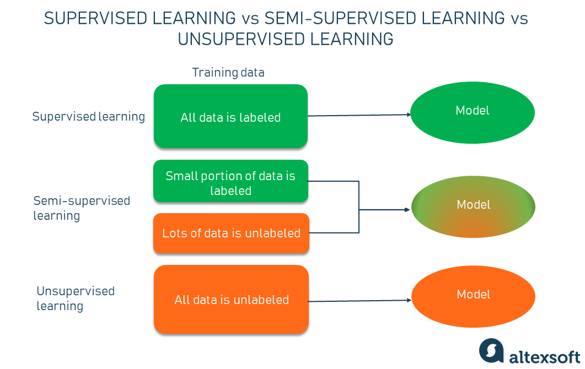

Polunadzirno učenje
Kao što se ponekad dešava, kada jedan pristup ne uspe da reši problem, pokušavate sa drugim. Kada ni taj pristup ne funkcioniše, možda bi bilo dobro kombinovati najbolje delove oba. Barem je to često slučaj sa tehnološkim zadacima. I mašinsko učenje nije izuzetak. Verovatno ste čuli za dve glavne tehnike ML-a — učenje pod nadzorom i učenje bez nadzora. Brak obe te tehnologije iznedrio je sretan medij poznat kao polunadgledano učenje.Šta je polunadgledano učenje?
Ukratko, polunadgledano učenje (SSL) je tehnika mašinskog učenja koja koristi mali deo označenih podataka i mnogo neoznačenih podataka za obuku prediktivnog modela.Da bismo bolje razumeli koncept SSL-a, trebalo bi da ga posmatramo kroz prizmu njegovih dva glavna para.

Polu-nadgledano učenje premošćuje nadgledano učenje i tehnike učenja bez nadzora kako bi se rešili njihovi ključni izazovi. Pomoću njega obučavate početni model na nekoliko označenih uzoraka, a zatim ga iterativno primenjujete na veći broj neoznačenih podataka.
-Za razliku od učenja bez nadzora, SSL radi na nizu problema od klasifikacije i regresije do grupisanja i povezivanja.
-Za razliku od učenja pod nadzorom, metoda koristi male količine označenih podataka, a takođe i velike količine neoznačenih podataka, što smanjuje troškove ručnog beleženja i skraćuje vreme pripreme podataka.
Samoobuka
Jedan od najjednostavnijih primera polunadgledanog učenja, uopšteno gledano, je samoobuka.Samoobuka je procedura u kojoj možete koristiti bilo koju nadgledanu metodu za klasifikaciju ili regresiju i modifikovati je da radi na polu-nadgledani način, koristeći prednosti označenih i neoznačenih podataka.
Ko-trening
Izveden iz pristupa samoobuke i kao njegova poboljšana verzija, ko-obuka je još jedna polunadgledana tehnika učenja koja se koristi kada je dostupan samo mali deo označenih podataka. Za razliku od tipičnog procesa, zajednički trening obučava dva pojedinačna klasifikatora na osnovu dva pogleda podataka.Pogledi su u osnovi različiti skupovi funkcija koje pružaju dodatne informacije o svakoj instanci, što znači da su nezavisni u zavisnosti od klase. Takođe, svaki pogled je dovoljan - klasa uzoraka podataka može se tačno predvideti samo iz svakog skupa karakteristika.
Originalni ko-trening istraživački rad tvrdi da se pristup može uspešno koristiti, na primer, za zadatke klasifikacije veb sadržaja. Opis svake veb stranice može se podeliti na dva prikaza: jedan sa rečima koje se pojavljuju na toj stranici i drugi sa sidrenim rečima u linku koji vodi do nje.
Primeri učenja sa polu-nadgledanjem
- Prepoznavanje govora
- Klasifikacija veb sadržaja
- Klasifikacija tekstualnih dokumenata